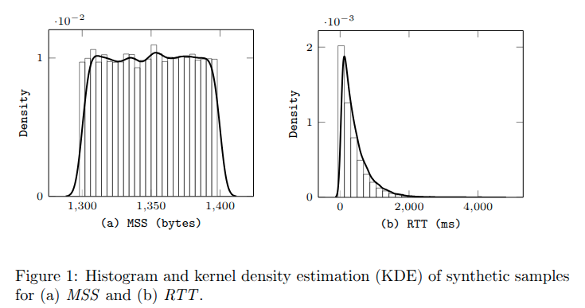

(iFigs) informative Figures using LaTeX and Matplotlib
Histograms

LaTeX code
To reproduce this figure, the TXT files containing histogram and KDE data can be downloaded from MSS_histogram, MSS_kde RTT_histogram, RTT_kde.
\documentclass{article}
\usepackage{graphicx}
\usepackage{tikz}
\usepackage{pgfplots}
\pgfplotsset{compat=1.8}
\begin{document}
\begin{figure}[hb]
\begin{center}
\begin{tabular}{c c}
\hspace{-10pt}
\begin{minipage}{.50\linewidth}
\begin{tikzpicture}
\begin{axis}[
width=\textwidth,
ylabel = \footnotesize \texttt{Density},
ylabel style = {yshift=-0.1cm},
xlabel = \footnotesize \texttt{(a) MSS (bytes)},
xlabel style = {yshift=0.1cm},
ymin=0,
ticklabel style = {font=\scriptsize},
ytick ={0,1e-2},
]
\addplot[ybar,bar width=4,fill=white!20,opacity=0.5] table[x ={y},y = x]{FigData/MSS_histogram.txt};
\addplot[smooth, thick, line width=1.00pt] table[x ={x},y = y]{FigData/MSS_kde.txt};
\end{axis}
\end{tikzpicture}
\end{minipage}
&
\hspace{-20pt}
\begin{minipage}{.50\linewidth}
\begin{tikzpicture}
\begin{axis}[
width=\textwidth,
ylabel = \footnotesize \texttt{Density},
ylabel style = {yshift=-0.1cm},
xlabel = \footnotesize \texttt{(b) RTT (ms)},
xlabel style = {yshift=0.1cm},
ymin=0,
ticklabel style = {font=\scriptsize},
ytick ={0,1e-3,2e-3},
]
\addplot[ybar,bar width=185,fill=white!20,opacity=0.5] table[x ={y},y = x]{FigData/RTT_histogram.txt};
\addplot[smooth, thick, line width=1.00pt] table[x ={x},y = y]{FigData/RTT_kde.txt};
\end{axis}
\end{tikzpicture}
\end{minipage}
\end{tabular}
\end{center}
\caption{Histogram and kernel density estimation (KDE) of synthetic samples for (a) $\mathit{MSS}$ and (b) $\mathit{RTT}$.}
\label{fig:synthetic_hist}
\end{figure}
\end{document}
Boxplots
![Ten boxplots showing estimated prevalence values for robust MoR-type methods across different prevalence levels from 1 percent to 10 percent in Erdős–Rényi networks with mean 50. Each subplot displays boxplots for multiple methods with prevalence values on the y axis and method names on the x axis. The figure caption reads Figure 2 Erdős–Rényi mu equals 50. Boxplots yielded by robust MoR-type methods in scenarios without contamination for different prevalence levels. The overall tone is analytical and scientific.](figs/boxplots.png)
Visits:
...